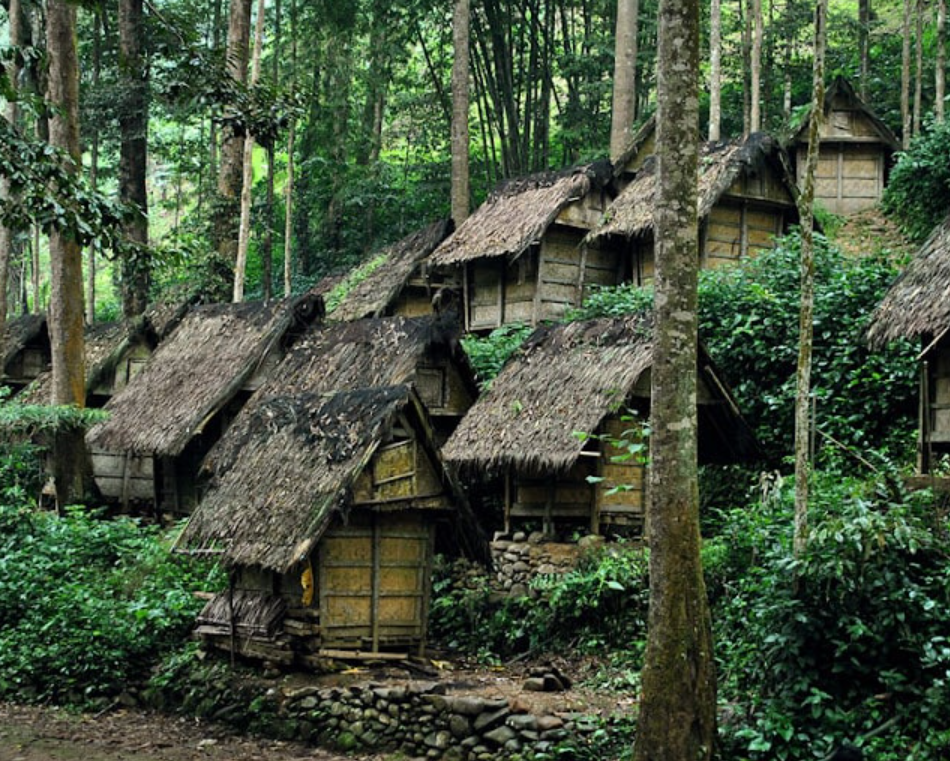
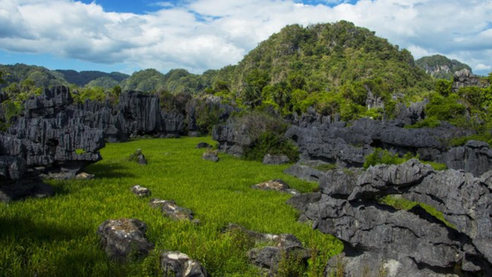
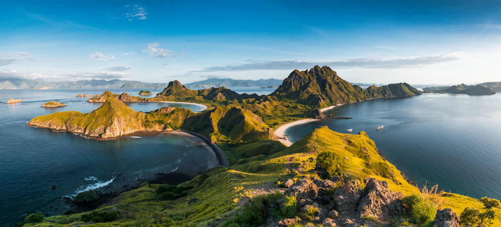
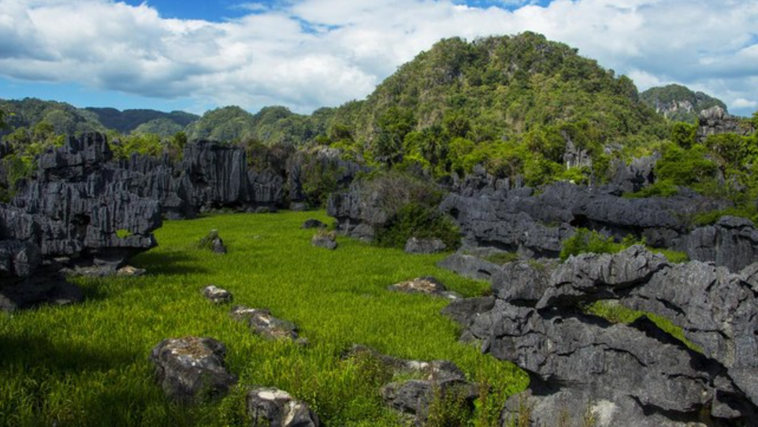
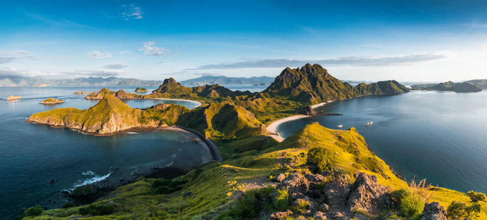

Profil Pembuat
- Nama:Muhammad Dzawil Arham
- Email: muhammaddzawilarham@gmail.com
- linkedin: https://www.linkedin.com/in/muhammad-dzawil-arham-a68b84293/
Deskripsi My Galery Wish List
Ini adalah kota-kota indah yang belum pernah namun ingin saya datangi
Foto kota yang ingin didatangi
 



informasi destinasi favorit
| Nama Kota | Ikon Kota | Jumlah Penduduk | keunikan |
|---|---|---|---|
| Baduy | Wanita | 26.000 jiwa | budaya yang masih terjaga |
| Raja Ampat | wisata | 47.885 jiwa | pesona alam yang asri |
| Maros | Tebing karst | 338.917 jiwa | bukit dan tebing karst yang mengelilingi penduduk |
| Flores | Pantai | 6,6 juta jiwa | budaya yang unik dan wisata yang melimpah |
copyright ©2023 Muhammad Dzawl Arham